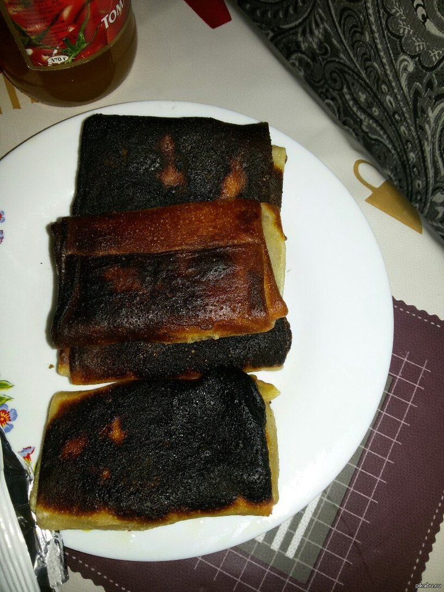
Блинчики-невидимки
Секретный рецепт, который покорит ваше сердце и желудок.
- Время приготовления
- Калорийность
- 220 ккал
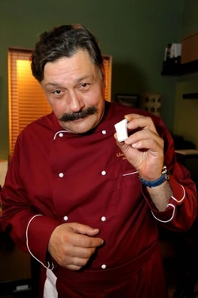
Кулинар и фуд-блогер

Секретный рецепт, который покорит ваше сердце и желудок.
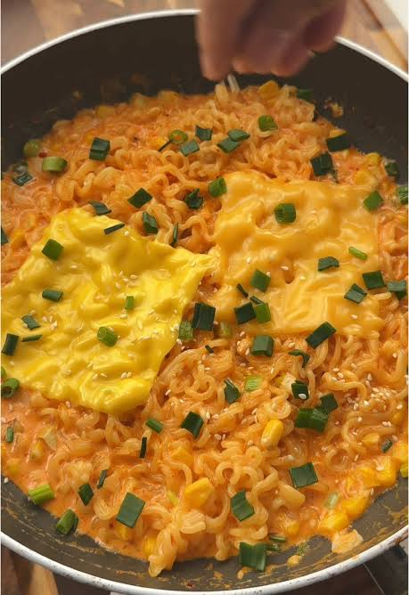
Доширак, возведённый в абсолют кулинарного искусства. Быстро, сытно и гениально.
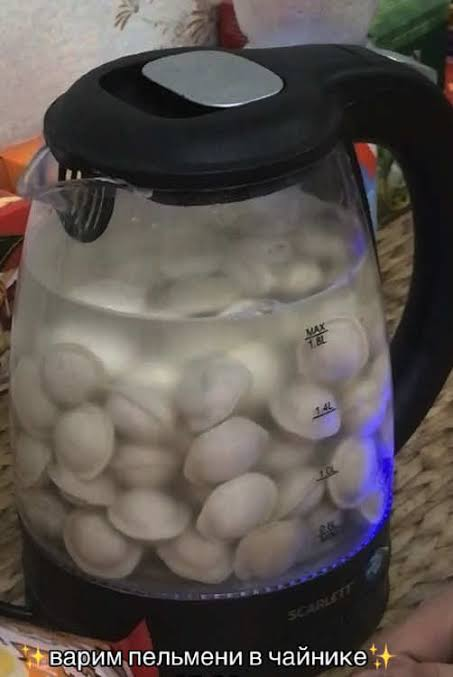
Лайфхак для студентов. Идеальная варка без лишних кастрюль и грязной посуды.
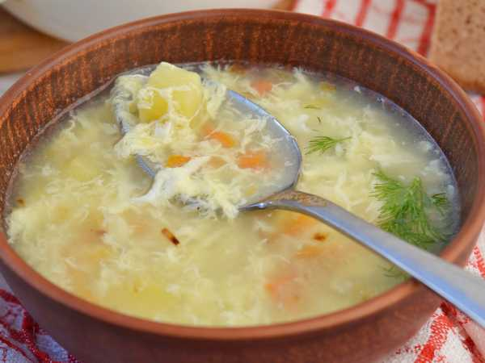
Классика, которая согревает в любую погоду.
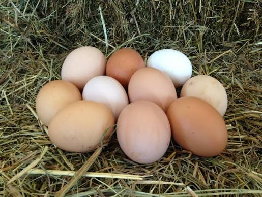
С ним даже вчерашние макароны вкуснее. Источник белка и витаминов.
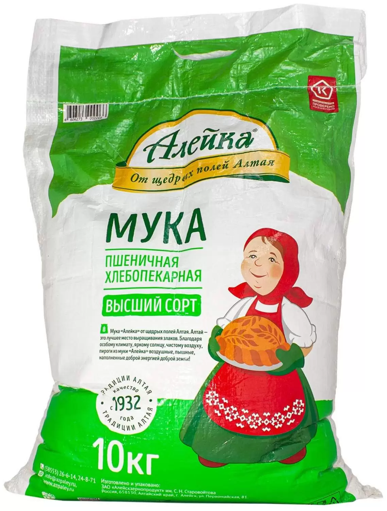
Основа любого теста. Пшеничная высшего сорта — залог пышных блинчиков.
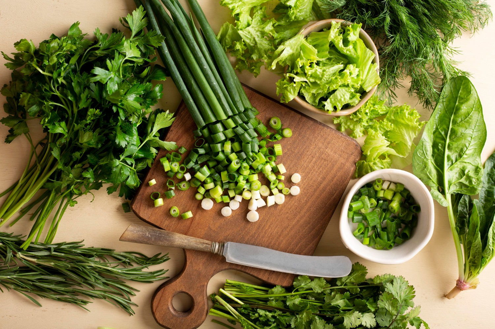
Петрушка, укроп, кинза — придают блюду свежесть и аромат.
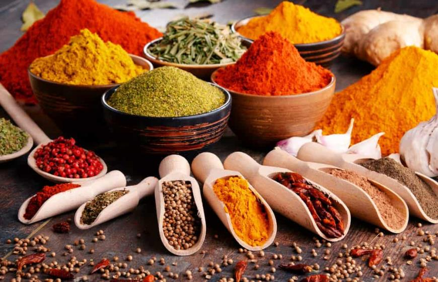
Паприка, куркума, чёрный перец — превращают обычное блюдо в шедевр.
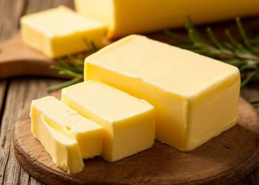
82,5% жирности — для идеальной каши и золотистой корочки.
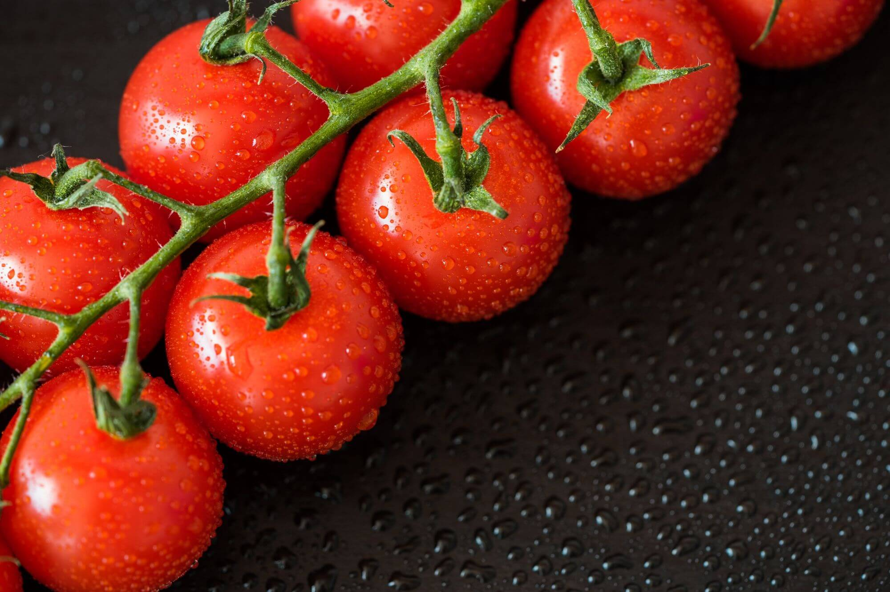
Сладкие и сочные — идеальны для салатов, пасты и закусок.
Секретный рецепт, который покорит ваше сердце и желудок.
Доширак, возведённый в абсолют кулинарного искусства. Быстро, сытно и гениально.
Лайфхак для студентов. Идеальная варка без лишних кастрюль и грязной посуды.
Классика, которая согревает в любую погоду.